Fazione
Dork
Goblin con le padelle per elmo, maghi distratti, cavalieri spettrali e strateghi alati. Testardi, rumorosi e incredibilmente coraggiosi: sono il cuore pulsante del borgo.
Gioco di carte tattico · 1 vs 1
Nel borgo si accendono le lanterne: è ora di radunare la tua banda di Dork e creature della foresta, schierarli sul campo e frantumare la roccia magica dell'avversario. Colleziona, evolvi, combatti.
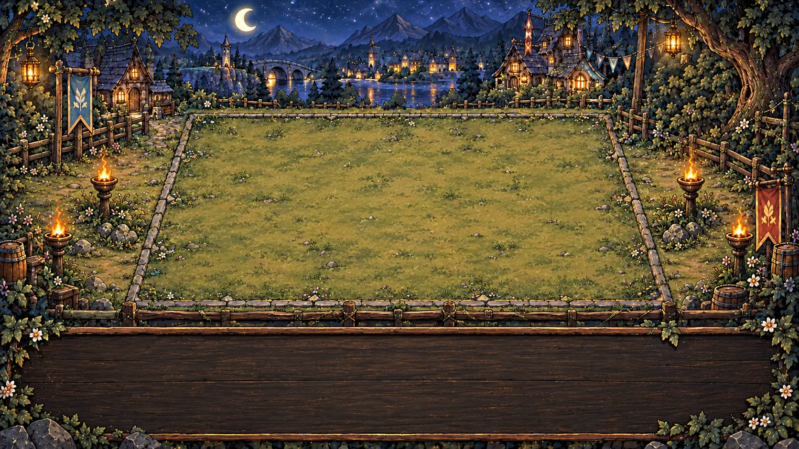
Come si gioca
Scegli fino a 8 carte dalla tua collezione. Ne peschi 4 all'inizio e ricarichi la mano a ogni turno.
Il campo ha 4 corsie e 6 colonne: tre sono tue. I combattenti in Mischia vanno al fronte, quelli a Distanza nelle retrovie.
Veleno, scudi magici, trappole, evocazioni, colpi critici: ogni carta ha poteri che cambiano la battaglia.
Sfonda le linee nemiche e distruggi la roccia magica del condottiero avversario per vincere la partita.
Fazione
Goblin con le padelle per elmo, maghi distratti, cavalieri spettrali e strateghi alati. Testardi, rumorosi e incredibilmente coraggiosi: sono il cuore pulsante del borgo.
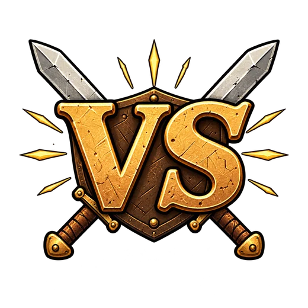
Fazione
Volpi delle nevi, conigli guerrieri, falene incantatrici e radici antiche quanto il mondo. La foresta si è svegliata e non ha nessuna intenzione di lasciarsi calpestare.
Evoluzioni
Sali di livello, guadagna stelle con le rinascite e sblocca due evoluzioni: nuovo aspetto, statistiche più alte e un'abilità tutta nuova.
Collezione
Apri gli scrigni, trova i duplicati e potenzia le carte. Le cornici cambiano colore con la rarità: la caccia alla dorata non finisce mai.
I leggendari
Ogni leggendario ha abilità esclusive, illustrate e animate apposta. Passa sopra una carta per evocarne la pedina.
Modalità di gioco
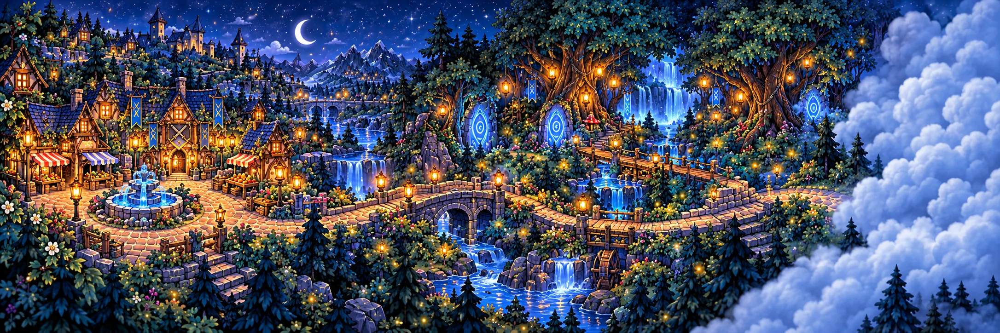
StoriaParti dalla piazza del borgo e attraversa ponti, cascate e boschi incantati. Sconfiggi i nemici controllati dall'IA, sblocca nuovi luoghi e guadagna monete a ogni vittoria.
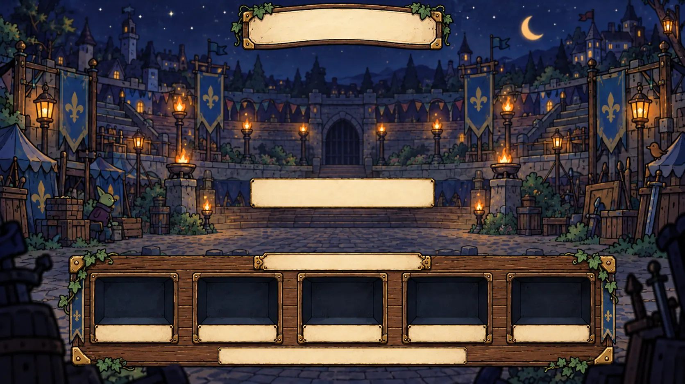
Online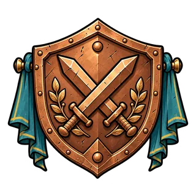
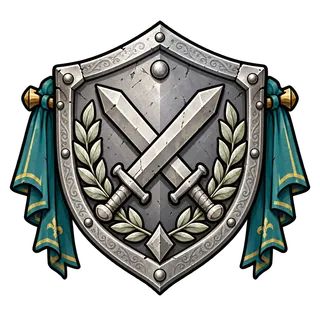
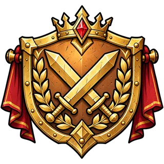
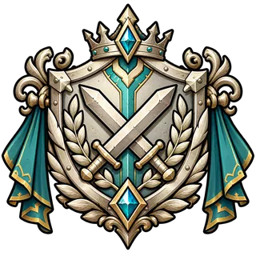
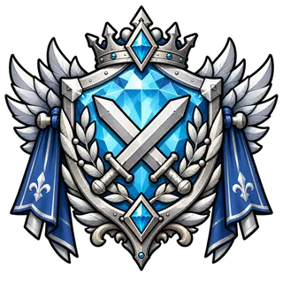
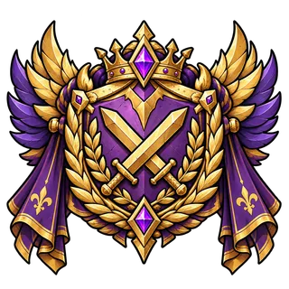
Affronta giocatori reali in duelli 1 vs 1 e scala le fasce, dal Bronzo fino agli Sfidanti.
Crea una stanza, condividi il codice e sfida un amico. Le regole girano sul server: niente trucchi, solo strategia.
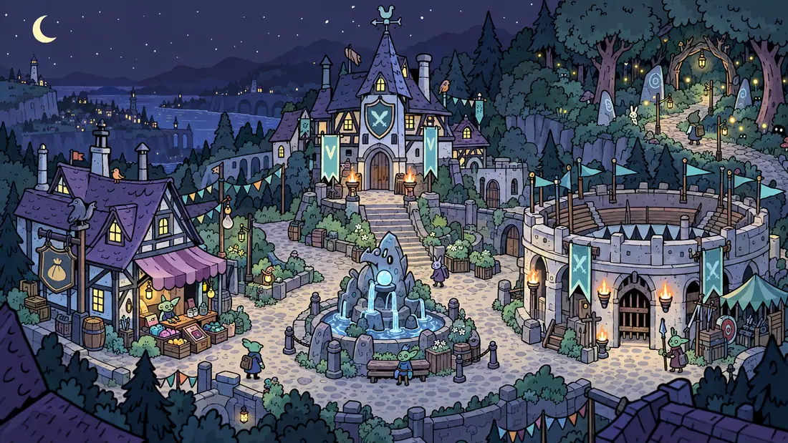
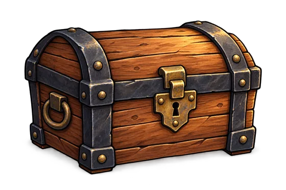
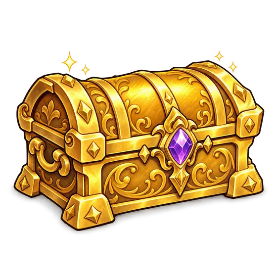
Scrigni di legno e dorati, quattro carte per apertura e rarità garantite.
Obiettivi giornalieri e mensili sulla bacheca del borgo, con monete e gemme in palio.
Livelli, stelle, rinascite ed evoluzioni: ogni carta racconta i tuoi progressi.
Presto disponibile
Deck of Dorks arriva su Android e iOS. Nel frattempo, studia ogni carta nella wiki e prepara il mazzo perfetto.